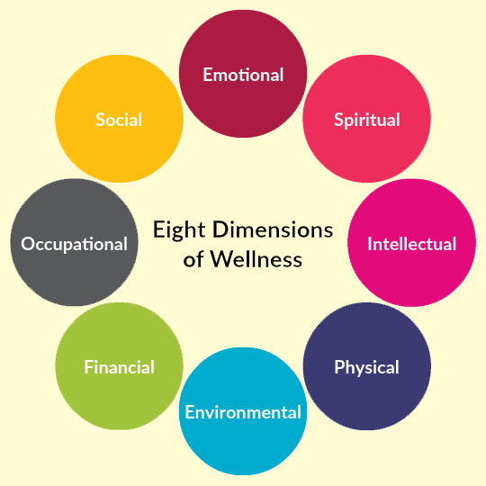
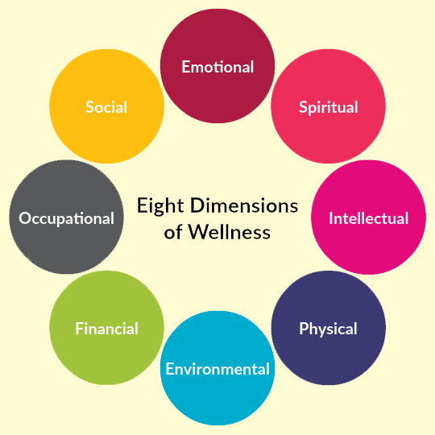

MENTAL HEALTH


Mental Health Symptoms
Depression
-
Persistent sadness or feeling of emptiness
Persistent sadness or a lingering feeling of emptiness can be debilitating, affecting every aspect of life. This emotional state, often associated with depression, can manifest as a heavy weight on the soul, making it difficult to find joy or meaning in daily activities. It's like walking through a fog, where even the brightest moments feel muted and distant. Those experiencing this profound sadness may find themselves withdrawing from social interactions, losing interest in hobbies, and struggling to maintain motivation. Each day can feel like an uphill battle, with no end in sight. The emptiness that accompanies this sadness can be overwhelming, leaving individuals feeling disconnected from themselves and the world around them. Addressing persistent sadness or emptiness often requires professional help, including therapy, medication, or a combination of both. Additionally, practicing self-care, engaging in activities that bring even the smallest moments of joy, and building a support network can help individuals navigate through these challenging emotions and find a path towards healing and recovery.
-
Lack of interest or pleasure in activities
Lack of interest or pleasure in activities, known as anhedonia, can cast a gray veil over life's vibrant tapestry. It's like watching the world in black and white, devoid of the colors that once brought joy. Simple pleasures lose their allure, and even activities that used to be exciting feel dull and meaningless. This disinterest can seep into every corner of life, affecting work, relationships, and self-care routines. It's not just a fleeting mood but a persistent emptiness that weighs heavy on the spirit, making it challenging to find motivation or enjoyment in anything
-
Changes in appetite or weight
Changes in appetite or weight can serve as visible markers of inner turmoil, reflecting the intricate dance between emotional well-being and physical health. For some, stress may lead to a loss of appetite, causing food to lose its appeal and resulting in unintended weight loss. Conversely, others may turn to food for comfort in times of distress, leading to increased consumption and subsequent weight gain. These fluctuations can impact self-image and confidence, further exacerbating feelings of unease or dissatisfaction. Whether manifested through eating too much or too little, changes in appetite and weight often signal an underlying struggle with emotions or stressors.
-
Difficulty sleeping or oversleeping
Difficulty sleeping or oversleeping can disrupt the delicate rhythm of life, leaving individuals feeling exhausted and out of sync. Insomnia, characterized by difficulty falling or staying asleep, can stem from racing thoughts, stress, or underlying anxiety, robbing nights of restorative rest. On the other hand, oversleeping, or hypersomnia, can be a response to depression or a way of escaping from overwhelming emotions. These disruptions in sleep patterns can have profound effects on mental and physical health, exacerbating feelings of fatigue, irritability, and difficulty concentrating. They create a vicious cycle, where sleeplessness fuels daytime distress, further compromising sleep quality.
-
Feelings of worthlessness or guilt
Feelings of worthlessness or guilt can weave a tangled web around one's sense of self-worth, distorting perceptions and clouding judgment. It's like carrying a heavy burden on the soul, where every action is scrutinized through a lens of self-doubt and blame. These emotions can stem from past mistakes, perceived failures, or a deep-seated belief of not measuring up to expectations. Worthlessness corrodes self-esteem, whispering destructive narratives that erode confidence and vitality. Guilt, on the other hand, serves as a relentless reminder of perceived wrongs, haunting the mind with a sense of responsibility and remorse.
-
Difficulty concentrating or making decisions
Difficulty concentrating or making decisions can feel like trying to navigate through a dense fog, where clarity and focus remain elusive. This cognitive fog can stem from various factors, including stress, anxiety, or underlying mental health conditions. It's like having a scattered mind, where thoughts dart aimlessly without settling on a single point. Addressing difficulty concentrating or making decisions often involves addressing underlying causes while implementing strategies to improve focus and decision-making skills. Techniques such as mindfulness meditation, breaking tasks into smaller steps, and setting clear priorities can help sharpen concentration and facilitate better decision-making. Seeking support from healthcare professionals or therapists can also provide guidance in managing underlying stressors or mental health concerns, ultimately restoring clarity and effectiveness to cognitive processes.
-
Thoughts of death or suicide
Thoughts of death or suicide can cast a shadow over one's mental landscape, signaling profound distress and a sense of hopelessness. It's like standing on the edge of a precipice, with the allure of escape overshadowing the pain of the present moment. These thoughts may arise from intense emotional turmoil, untreated mental illness, or overwhelming life circumstances. Experiencing such thoughts can be frightening and isolating, but it's essential to recognize that help and support are available. Opening up to trusted loved ones or mental health professionals can provide a lifeline in navigating through these dark thoughts. Therapy, medication, and support groups offer valuable resources for addressing underlying issues and developing coping strategies.
Anxiety Disorders
-
Excessive worrying
Excessive worrying can feel like being trapped in a relentless cycle of anxiety, where the mind fixates on potential dangers and worst-case scenarios. It's like carrying a backpack full of "what ifs," weighing down every step with apprehension and fear. This chronic worrying can consume valuable mental energy, leaving little room for joy or peace of mind. Individuals experiencing excessive worry may find themselves constantly on edge, anticipating catastrophe in every situation. Sleep may be disrupted as the mind races with anxious thoughts, and physical symptoms such as muscle tension or headaches may manifest as a result of prolonged stress.
-
Feeling restless or on edge
Feeling restless or on edge can be like constantly sitting on the edge of a chair, unable to find comfort or stillness. It's a sensation of inner turmoil, where the body and mind seem to be in a perpetual state of alertness. This restlessness can manifest as a jittery feeling, an inability to relax, or a constant need to be in motion. Living with this sense of unease can be exhausting, as it drains energy and makes it difficult to focus on anything else. It's like having a buzzing undercurrent of tension running through every moment, preventing true relaxation or peace of mind.
-
Fatigue
Fatigue can feel like wading through thick mud, each step requiring an immense effort as exhaustion weighs heavy on both body and mind. It's more than just feeling tired; it's a pervasive sense of weariness that persists despite rest. This profound fatigue can make even the simplest tasks feel daunting and drain the joy from daily life. Living with chronic fatigue can be frustrating and isolating, as it limits one's ability to engage fully in work, relationships, and activities that once brought pleasure. It's like carrying a heavy burden that no amount of sleep seems to alleviate.
-
Difficulty concentrating
Difficulty concentrating can be akin to trying to focus on a distant object through a foggy window—effortful, frustrating, and often elusive. It's like grasping at scattered thoughts that slip through the fingers before they can coalesce into coherent ideas. This cognitive challenge can hinder productivity, disrupt learning, and impede daily tasks. Living with difficulty concentrating can lead to feelings of inadequacy and frustration, as the mind struggles to maintain focus amidst distractions. Simple tasks may take longer to complete, and information may seem harder to retain.
-
Irritability
Irritability can be like living with a short fuse, where even the smallest inconveniences or interactions can trigger a disproportionate emotional response. It's like carrying a constant low-grade frustration that simmers beneath the surface, ready to flare up at any moment. This emotional state can strain relationships, impact work performance, and diminish overall well-being. Living with irritability can feel exhausting, as it requires constant vigilance to manage reactions and maintain composure. Simple annoyances can feel magnified, and patience wears thin quickly.
-
Muscle tension
Muscle tension can feel like carrying the weight of the world on your shoulders, with each muscle fiber wound tight like a coiled spring. It's a physical manifestation of stress and anxiety, causing stiffness, discomfort, and even pain throughout the body. This tension can settle in the neck, shoulders, back, and jaw, creating knots that seem impossible to untangle. Living with muscle tension can be incredibly uncomfortable, impacting mobility, posture, and overall well-being. It's like wearing a suit of armor made of knots, restricting movement and exacerbating feelings of stress and unease.
-
Panic attacks
Experiencing a panic attack can be like being caught in the grip of a sudden and overwhelming storm of fear and anxiety. It's a visceral experience that can strike without warning, engulfing both body and mind in a torrent of intense sensations. Symptoms may include rapid heartbeat, chest pain, shortness of breath, trembling, dizziness, and a sense of impending doom. During a panic attack, it can feel as though the world is closing in, and escape seems impossible. Rational thought gives way to primal instinct, and the urge to flee or seek safety becomes paramount.
-
Difficulty sleeping
Difficulty sleeping can feel like being adrift in a sea of wakefulness, unable to find the shores of rest and tranquility. It's a frustrating experience where the mind refuses to quiet down, keeping sleep at bay despite exhaustion. Whether characterized by trouble falling asleep, staying asleep, or waking up too early, disrupted sleep patterns can wreak havoc on overall well-being. Living with difficulty sleeping can lead to a myriad of consequences, including daytime fatigue, irritability, difficulty concentrating, and impaired functioning. It's like trying to navigate through life with a foggy mind and heavy limbs, unable to fully engage in daily activities.


 
